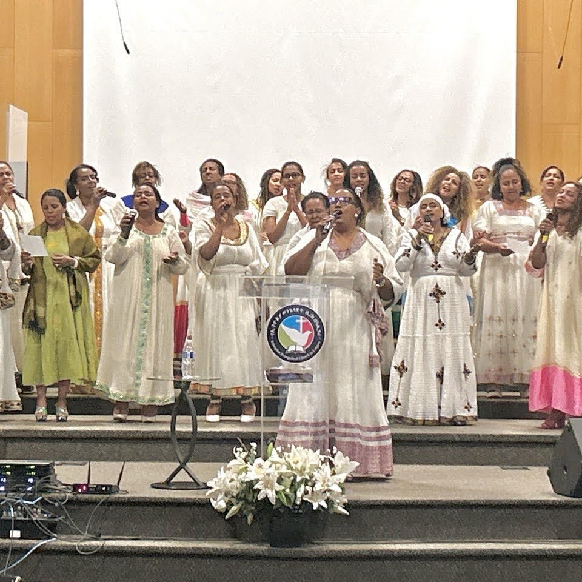

OUR MINISTRIES
የትውልድ፣ የቤተሰብ እና የህብረት አገልግሎቶች

YOUTH & YOUNG ADULTS
የወጣቶች አገልግሎት
Empowering the next generation with biblical truth, authentic fellowship, and practical life mentorship.
CHILDREN'S MINISTRY
የልጆች አገልግሎት
Nurturing young minds in God's love through interactive Sunday school lessons, songs, and scripture memory.
SMALL GROUPS
የህብረት ቡድኖች (የመጽሐፍ ቅዱስ ጥናት)
Mid-week neighborhood home fellowships across Calgary focused on scripture study and mutual prayer.

WOMEN'S MINISTRY
የሴቶች አገልግሎት
Dedicated prayer, discipleship, and spiritual fellowship encouraging women to flourish in faith and family.
MEN'S MINISTRY
የወንዶች አገልግሎት
Building godly leaders, husbands, and fathers through prayer breakfasts, scripture study, and brotherhood.
FAMILY MINISTRY
የቤተሰብ እና የጋብቻ አገልግሎት
Strengthening marriages and family relationships through practical workshops, communication skills, and counseling.
WORSHIP & PRAISE MINISTRY
የአምልኮ እና የምስጋና አገልግሎት
Leading the congregation into God's presence each Sunday through heartfelt praise, traditional and modern gospel songs, and musical excellence.